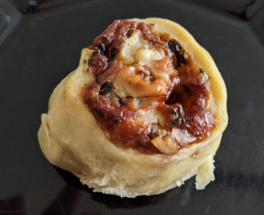

| Zutaten für ca. 14 Stück: | |
| Teig: | |
| 250g | Mehl |
| 1/2 Würfel = 20g | Hefe |
| 1.5 dl | Wasser |
| 1Tl | Salz |
| 1.5 El | Olivenöl |
| Füllung: | |
| 100g | Baumnusskerne |
| 1 Bund | glattblättrige Petersilie |
| 150g | geriebener Gruyère |
| 2 El | Rahm |
| Salz, Pfeffer aus der Mühle | |
Mehl in eine Schüssel geben und in der Mitte eine Vertiefung eindrücken. Hefe mit 1/2 dl Wasser verrühren, in die Mulde geben und mit etwas Mehl zu einem dicklichen Teig rühren. Diesen Vorteig so lange gehen lassen, bis die Oberfläche Risse zeigt.
Salz über das Mehl streuen, restliches Wasser und Olivenöl beifügen und alles zu einem glatten, elastischen Teig kneten. In der Schüssel zugedeckt 50-60 Minuten an einem warmen Ort aufgehen lassen.
Nüsse grob hacken. Petersilie fein hacken. Beides mit Gruyère und Rahm mischen und mit Salz sowie Pfeffer abschmecken.
Eine Springform von 24-26 cm Durchmesser ausbuttern und mehlen.
Den Teig nochmals durchkneten. Auf der bemehlten Arbeitsfläche rechteckig 2-3 mm dünn auswallen. Die Käsemischung auf dem Teig ausstreichen, dabei einen Rand von 2cm frei lassen. Die Teigplatte von der Längsseite her satt aufrollen. Mit einem grossen Messer in etwa 3cm breite Rollen schneiden. Die Rollen rundum mit der Schnittfläche nach oben in die Springform legen; dabei zwischen den Rollen etwas Abstand lassen.
Den Käse-Nuss-Kranz im auf 200°C vorgeheizten Ofen auf der zweit-untersten Rille während 25-30 Minuten backen. Warm oder kalt servieren.
Pro Stück ca 6g Eiweiss, 11g Fett, 13g Kohlenhydrate, 179 Kalorien oder 747 Joule
Dieses würzig-pikante Brot kann vorgebacken werden - etwa 20 Minuten -, so dass es später noch gefroren oder angetaut nur noch aufgebacken werden muss. In diesem Fall den Ofen nicht vorheizen, sondern zusammen mit dem Brot aufheizen.
dChuchi 11/1998
Hat im Oktober 2020 ganz fein geschmeckt
@LINKBACK_TAG@ @WAKELOCK@